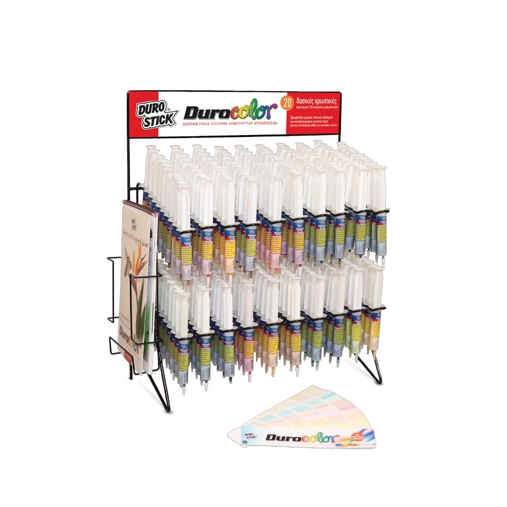
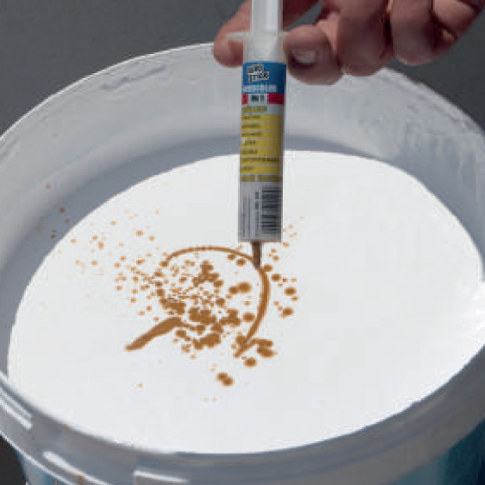
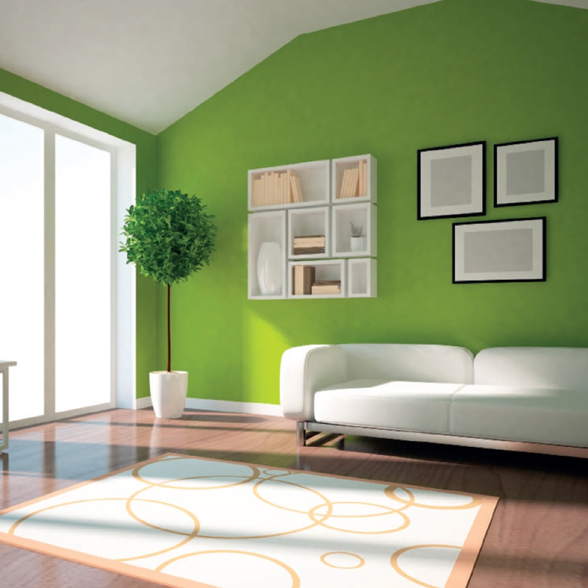

Магазин › Микроцемент и декоративные покрытия › Пигменты

Durostick Durocolor, пигменты для микроцемента: порошок Powder-C 250 г и жидкие в шприцах 20 мл
Два вида пигментов Durocolor для колеровки микроцемента. Порошковый Powder-C в пакетах по 250 г окрашивает сухие смеси в массе (DS-259 и другие цементные микроцементы). Жидкие пигменты в шприцах по 20 мл колеруют готовую микроцементную пасту DS-258 и краски.
Цена по запросу
Вариант: Powder-C, пакет 250 г · Жидкий, шприц 20 мл
- Варианты
- Powder-C 250 г (порошок) или шприц 20 мл (жидкий)
- Powder-C
- Белый + 48 цветов, 96 оттенков по карте
- Шприцы
- 21 базовый пигмент, 120 рецептов по карте


Durocolor Powder-C, порошковый пигмент для цементных смесей и микроцемента, 250 г
Durocolor Powder-C это цветные порошковые пигменты на основе винилированных смол, расфасованные в пакеты по 250 г для точной дозировки. Пигмент растворяется в воде затворения и окрашивает сухую смесь в массе. Стоек к ультрафиолету, обладает отличной стабильностью и долговечностью. Белый и 48 постоянных цветов дают 96 оттенков по карте, для микроцемента DS-259, DS-250, DS-252 Flex, DS-256 Flex Velvet, шпаклёвок и белых затирок Durostick.
| Назначение | Колеровка микроцементов DS-250, DS-252 Flex, DS-256 Flex Velvet, DS-259 Deco Micro Resin; шпаклёвок Stucofix-P, Powder Coat, Granular, Granular Ultra; белых цементных затирок и белых растворов D-3, D-4, D-5, Antislip; белых штукатурок и белого цемента |
|---|---|
| Дозировка | 1 или 3 пакета по 250 г на мешок смеси в зависимости от оттенка по карте; мелкозернистые смеси требуют пропорционально больше пигмента |
| Как использовать | Пигмент размешать в воде затворения, затем добавить смесь, перемешивать 5-10 мин |
| Упаковка | Пакет 250 г, коробка 15 пакетов |
| Цвета | Белый + 48 постоянных цветов, 96 оттенков по карте |
| Стандарт / DoP | Не применимо (пигмент), DoP нет |
| Хранение | 120 месяцев в заводской упаковке в сухом месте |
Durocolor, жидкий пигмент в шприце 20 мл для микроцементной пасты и красок
Durocolor это готовые жидкие пигменты в шприцах по 20 мл для точной колеровки. Система из 21 базового пигмента даёт 120 рецептов цветов по карте Durocolor, а также позволяет создавать собственные оттенки и корректировать уже подобранные. Колерует микроцементную пасту DS-258 Deco Micro Flex, водно-дисперсионные и акриловые краски, эластомерные краски и гидроизоляции, водные эмали и эпоксидные краски. Белый пигмент можно сочетать с эпоксидными и акриловыми смолами без растворителей.
| Назначение | Колеровка DS-258 Deco Micro Flex, эмульсионных и акриловых красок, эластомерных красок и гидроизоляций, водных эмалей, эпоксидных красок; декоративные работы с эпоксидными и акриловыми смолами |
|---|---|
| Дозировка для DS-258 | Объём по рецепту в мл × 0,2 на 1 кг пасты (пример: рецепт № 90 = 3 мл пигмента № 9, то есть 0,6 мл на 1 кг пасты) |
| Упаковка | Шприц 20 мл, один пигмент в шприце |
| Цвета | 21 базовый пигмент (№ 1-21), 120 рецептов по карте |
| Стандарт / DoP | Не применимо, DoP нет |
Безопасность и обязательная информация
Паспорта безопасности на пигменты запросим у производителя.
Производитель: DUROSTICK S.A., Aspropyrgos, Attica, Греция.
Ответственное лицо в ЕС / импортёр: ART STAV s. r. o., Jarabinková 6B, 821 09 Bratislava, IČO: 57915946, e-mail: info@art-stav.sk.
Документы
Остальные документы запросим у производителя.